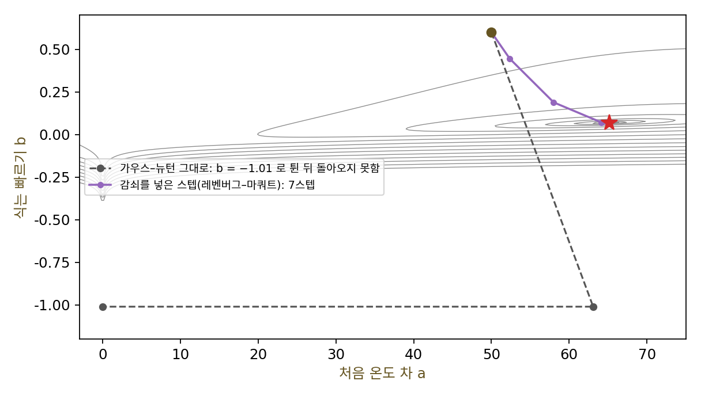
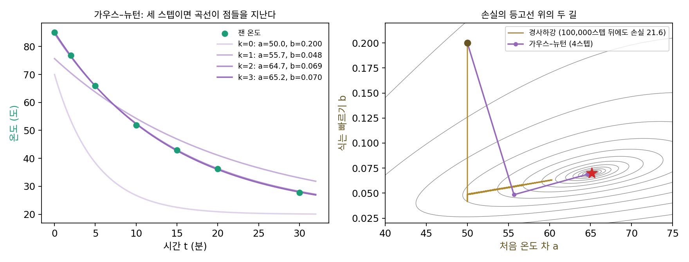

가우스–뉴턴: 제곱 오차의 곡률은 자코비안이 안다
준뉴턴법은 손실이 어떻게 생겼는지 모르는 채로 그래디언트만 보고 곡률을 쌓았다. 그런데 학습의 손실은 대개 아무 함수가 아니다. 회귀라면 예측과 정답의 어긋남, 곧 잔차를 제곱해 더한 것이다. 손실이 이렇게 생긴 것을 안다면, 그 구조로 곡률을 더 값싸고 확실하게 얻을 수는 없을까?
역사: 궤도 계산에서 병기창까지
잔차의 제곱합을 가장 작게 하는 최소제곱법은 1805년 아드리앵마리 르장드르(Adrien-Marie Legendre)가 먼저 발표했고, 카를 프리드리히 가우스(Carl Friedrich Gauss)는 1809년 『천체 운동론(Theoria motus)』에서 행성의 궤도를 관측에 맞추는 데 쓰며 그 근거를 적었다. 궤도의 식은 파라미터에 대해 곧은 식이 아니어서, 지금 자리에서 식을 일차식으로 어림하고 그 일차식의 최소제곱 문제를 푸는 일을 되풀이하게 된다. 가우스의 이름이 붙은 까닭은 이 최소제곱의 틀 때문이고, 오늘날 꼴의 반복을 누가 처음 적었는지는 자료에 따라 말이 다르다.
이 방법은 출발점이 답에서 멀면 터무니없이 큰 스텝을 내딛곤 했다. 1944년 미 육군 프랭크퍼드 병기창의 케네스 레벤버그(Kenneth Levenberg)는 「최소제곱의 어떤 비선형 문제들을 푸는 한 방법」에서 스텝의 크기를 묶는 항을 더했다. 일차식 어림을 믿을 수 있는 만큼만 가자는 것이다. 1963년 화학 회사 듀폰의 통계학자 도널드 마쿼트(Donald Marquardt)는 같은 생각을 다시 찾아내 그 항의 크기를 스텝마다 고치는 규칙을 붙였고, 논문 끝에 심사자가 레벤버그의 글을 알려 주었다고 적었다. 둘의 이름을 딴 레벤버그–마쿼트 방법은 지금도 곡선 맞추기 프로그램의 기본이다.

식어 가는 커피의 두 숫자
갓 내린 커피를 방에 두고 몇 분마다 온도를 쟀다(씨앗을 고정한 이 책의 예). 0, 2, 5, 10, 15, 20, 30분에 85.1, 76.8, 65.9, 51.9, 43.0, 36.2, 27.8도였다. 뉴턴의 냉각 법칙대로 방 온도 20도와의 차이가 지수로 줄어든다고 보고, 모델 T(t) = 20 + a·e^(−bt)의 두 파라미터 a(처음 온도 차)와 b(식는 빠르기: 온도 차가 1분에 줄어드는 비율)를 맞추자. 파라미터가 둘뿐이라 손실의 등고선을 한 장에 그려 볼 수 있고, 그러면서도 b가 지수 안에 있어 손실이 2차 함수가 아니다. 잔차 rᵢ = 모델 − 잰 값의 제곱합의 절반이 손실 f다.
손실을 두 번 미분하면 두 덩어리가 나온다. 잔차 하나를 파라미터로 한 번 미분한 값을 모은 행렬이 자코비안 J이고, 헤시안은 다음과 같다.
첫 덩어리 JᵀJ는 그래디언트를 계산할 때 이미 쓰는 J만으로 만들어지고, 둘째 덩어리는 잔차에 곱해져 있다. 모델이 데이터를 잘 맞추는 바닥 근처에서는 잔차가 작으니 둘째 덩어리를 버려도 된다. 커피 모델의 바닥(a* = 65.17, b* = 0.0702)에서 재 보면 둘째 덩어리의 크기는 첫째의 0.038%다. 이렇게 헤시안 대신 JᵀJ를 써서 뉴턴 스텝을 내딛는 방법을 가우스–뉴턴법 (잔차의 일차식 어림으로 곡률 얻기 / Gauss–Newton method)이라 한다.
JᵀJ에는 헤시안에 없는 장점이 하나 더 있다. 어느 방향 v로 재도 vᵀJᵀJv = ‖Jv‖² ≥ 0이라 휨이 음수가 되지 않는다. 출발점 (a, b) = (50, 0.2)에서 참 헤시안의 고윳값은 −31,446과 1.68로, 한 방향은 오히려 꼭대기처럼 휘어 있다. 그래서 헤시안을 그대로 쓰는 뉴턴 스텝은 내리막이 아니어서 한 스텝도 나아가지 못했다. 같은 출발점에서 가우스–뉴턴은 4스텝, 경사하강은 10만 스텝 뒤에도 손실이 21.6으로 바닥(0.157)에 한참 못 미친다. 바닥에서 JᵀJ의 조건수가 25만이 넘기 때문이다.

ML에서: 헤시안 없는 학습과 일반화된 가우스–뉴턴
신경망의 손실이 늘 제곱 오차는 아니다. 2002년 니콜 슈라우돌프(Nicol Schraudolph)는 출력층과 손실이 서로 「맞물린」 경우(제곱 오차와 선형 출력, 크로스 엔트로피와 소프트맥스) 가우스–뉴턴 행렬을 신경망으로 넓힐 수 있음을 보이고, 이 행렬을 벡터에 곱한 값을 행렬을 만들지 않고 계산하는 법을 냈다. 신경망으로 넓힌 이 행렬을 일반화된 가우스–뉴턴 행렬이라 부른다. 2010년 제임스 마턴스(James Martens)의 「헤시안 없는 최적화로 하는 딥러닝」은 이 곱셈을 켤레 그래디언트법 안에서 되풀이해 스텝을 구했고, 그때까지 프리트레인 없이는 잘 학습되지 않던 깊은 오토인코더를 학습시켰다. 손실이 크로스 엔트로피일 때 이 행렬이 무엇과 같아지는지는 바로 다음 개념인 자연 그래디언트에서 만난다.
문제 4. 정사각형 텃밭의 한 변
넓이가 20 m²인 정사각형 텃밭의 한 변을 계산기 없이 구하려 한다. 한 변을 x로 두고 잔차를 r = x² − 20으로 잡자. (가) x = 4에서 가우스–뉴턴 한 스텝 x ← x − r/(2x)를 세 번 계산하라. (나) 이 규칙은 「4와 20/4의 평균을 새 답으로 삼는다」와 같은가? (다) 손실 ½r²에 학습률 0.01로 경사하강을 하면 처음 네 스텝은?

(가) 4 − (16 − 20)/8 = 4.5, 4.5 − 0.25/9 = 4.4722, 그다음 4.472136이에요. √20 = 4.472136이니 세 스텝에 소수 여섯째 자리까지 맞아요.

(나)는 x − (x² − 20)/(2x) = (x + 20/x)/2라서 같아. 4가 작으면 20/4 = 5는 크니까 둘의 평균이 참값에 더 가깝다는 거지. 알렉산드리아의 헤론이 적었다고 전해지는 제곱근 계산법이야.

(다)는요? 손실 ½r²의 그래디언트는 r·2x예요.

4.32, 4.4356, 4.4645, 4.4706… 가까워지긴 하는데 0.000001 안에 들려면 9스텝이 걸려요. 가우스–뉴턴은 그래디언트 r·2x를 곡률 (2x)²로 나누니까 학습률을 고를 필요가 없었네요.

여기서는 잔차가 하나라 JᵀJ가 (2x)² 숫자 하나야. 버린 덩어리 r·2는 바닥에서 r = 0이라 정말로 0이고. 그래서 바닥 근처에서 뉴턴법만큼 빨라.

시험 점수를 예상할 때 「내 예상과 친구 예상의 평균」을 내면 잘 맞던 게 이런 원리였을까요. 한쪽이 낮게 보면 다른 쪽이 높게 봐서요.
문제 5. 잔차를 버려도 될 때와 안 될 때
파라미터 하나짜리 모델 y = e^(bx)를 두 점 x = 1, 2에 맞춘다. (가) 잰 값이 2.7, 7.4이면(잘 맞는 데이터) 손실의 바닥에서 JᵀJ와 참 헤시안은 얼마나 다른가? (나) 잰 값이 2.7, 1.0이면(모델이 맞출 수 없는 데이터)? (다) 두 경우에 b = 0.5에서 출발한 가우스–뉴턴의 오차가 스텝마다 어떻게 줄어드는가?
가우스–뉴턴은 늘 뉴턴법만큼 빠르겠죠. 버린 덩어리는 작으니까요. (가)는 b* = 1.0005, JᵀJ = 226.22, 헤시안 226.17로 거의 같아요.

(나)는 어떻죠? 바닥에서 잔차부터 보세요.

b* = 0.2273인데 잔차가 −1.445와 0.576이에요. 모델이 점 둘을 다 지날 수 없으니까 바닥에서도 잔차가 커요. JᵀJ = 11.50, 헤시안 13.32로 0.864배밖에 안 돼요.
(다)를 보면 차이가 보여. (가)는 오차가 0.5에서 0.342, 0.0935로 처음 두 스텝은 더디다가, 그다음부터 0.0081, 0.000067, 0.00000002로 스텝마다 제곱에 가깝게 줄어. (나)는 0.273에서 0.037, 0.0041, 0.00067, 0.000105, 0.0000166으로 스텝마다 6분의 1쯤씩, 일정한 비율로만 줄고. 헤시안을 그대로 쓴 뉴턴법은 (나)에서도 0.0020, 0.0000104, 0.0000000003으로 제곱처럼 줄어.

버린 덩어리가 바닥에서 0이 아니면 가우스–뉴턴 스텝은 곡률을 조금 틀리게 재요. 틀린 비율만큼 오차가 남아 스텝마다 일정한 배율로만 줄어들죠. 그럼 「바닥 근처에서 잔차가 작으면」이라는 단서를 빼면 무엇이 남나요?

JᵀJ가 늘 휨이 양수라는 장점은 남고, 오차가 제곱으로 줄어드는 수렴 빠르기는 잃어요. 모델이 데이터를 잘 맞출수록 가우스–뉴턴이 뉴턴법에 가까워지는 거네요. 테일러 전개에서 버린 항이 작을 때만 어림이 좋은 것과 같은 이야기예요.

시험 범위의 절반만 공부했으면 문제를 아무리 잘 풀어도 점수가 어느 선에서 멈추는 거랑 비슷하네요. 모델이 맞추지 못한 잔차는 스텝을 잘 골라도 남아요.
문제 6. 선형 회귀에서 가우스–뉴턴은 몇 스텝
입력 5개, 샘플 100개인 선형 회귀(씨앗 2, 입력마다 크기를 1, 3, 0.3, 10, 1배로 다르게 뽑음)를 평균 제곱 오차로 학습한다. (가) 가중치 0에서 가우스–뉴턴 한 스텝을 가면 최소제곱 해와 얼마나 차이가 나는가? (나) 왜 그런가? (다) 학습률 1/L의 경사하강은 해의 0.001 안에 들기까지 몇 스텝인가?
가우스–뉴턴도 반복법이니 몇 스텝은 걸리겠죠. 계산해 보니… 한 스텝 뒤 해와의 차이가 2.5 × 10⁻¹⁴예요. 계산기의 반올림 오차 수준이에요.
예측 w·x는 w에 대해 어떤 식이죠? 그럼 잔차를 일차식으로 어림하는 단계에서 무엇을 잃나요?
잔차가 처음부터 w의 일차식이라 어림에서 잃는 게 없어요. ∇²rᵢ = 0이니 버린 덩어리도 정확히 0이고, JᵀJ = XᵀX/100이 헤시안 그 자체예요. 한 스텝이 정규방정식 XᵀXw = Xᵀy를 푸는 것과 같아요.

(다)는 헤시안 고윳값이 0.084에서 113.0까지라 조건수가 1,345예요. 경사하강은 9,199스텝 걸려요.
그럼 분류 문제, 출력이 소프트맥스이고 손실이 크로스 엔트로피라면 「잔차」는 무엇이고 가우스–뉴턴은 무엇이 될까요?

잔차의 제곱합이 아니니까 그대로는 안 되네요. 확률로 정해지는 손실에 맞는 곡률 행렬이 따로 있어야 할 것 같아요.
선형 회귀 숙제에서 np.linalg.lstsq 한 줄이 경사하강 수천 번과 같은 답을 낸 게 이거였구나. 학습이 아니라 방정식 풀이였던 거네요.